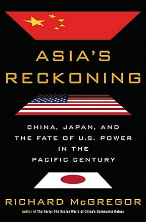

หนังสือแนะนำ โดย ผบ.สปท.
|  |
Asia's Reckoning: China, Japan, and the Fate of U.S. Power in the Pacific Centuryโดย Richard McGregor (2017)หนังสือ "Asia's Reckoning" ของริชาร์ด แมคเกรเกอร์ เป็นบันทึกเรื่องราวที่น่าสนใจเกี่ยวกับรอยร้าวทางภูมิรัฐศาสตร์ที่กว้างขึ้นในภูมิภาคเอเชีย ซึ่งเคยเฟื่องฟูภายใต้ร่มกำบังความมั่นคงของสหรัฐฯ มานาน ความขัดแย้งระหว่างจีนและญี่ปุ่น ประกอบกับความหวาดระแวงของทรัมป์ต่อพันธมิตรเก่า และความทะเยอทะยานของจีนในระดับภูมิภาค ทำให้เอเชียตะวันออกก้าวเข้าสู่ยุคใหม่แห่งความไม่มั่นคงและความขัดแย้ง หนังสือเล่มนี้เปิดเผยถึงการล่มสลายของโครงสร้างที่สหรัฐวางไว้หลังสงครามเพื่อเอเชียสมัยใหม่ พร้อมบอกเล่าเรื่องราวการขึ้นและตกของมหาอำนาจเอเชีย และการปะทะกันของจีนกับญี่ปุ่นที่อาจทำให้เกิดสึนามิทางเศรษฐกิจในทุกทวีป ซึ่งจะพิสูจน์อำนาจของอเมริกาว่าจะยังยืนหยัดในเอเชียต่อไปหรือไม่ |
It's OK to Be Angry About Capitalismโดย Bernie Sanders (2023)หนังสือ "It's OK to Be Angry About Capitalism" โดย เบอร์นี่ แซนเดอร์ส เป็นการวิจารณ์ระบบทุนนิยมที่ให้ความสำคัญกับผลประโยชน์ของชนชั้นสูง ที่ร่ำรวยมากกว่าความต้องการของชนชั้นแรงงาน แซนเดอร์สเผชิญหน้ากับความอยุติธรรมที่ครอบงำโดยระบบทุนนิยมที่อิสระ รวมถึงความไม่เท่าเทียมกันทางรายได้ที่เพิ่มสูงขึ้น การพังทลายของระบอบประชาธิปไตยจากอิทธิพลขององค์กร และความเสื่อมโทรมของ สิ่งแวดล้อมที่ขับเคลื่อนโดยอุตสาหกรรมเน้นผลกำไร เขาท้าทายให้ผู้อ่านตั้งคำถามถึงสภาพที่เป็นอยู่และสนับสนุนการเปลี่ยนแปลงทางเศรษฐกิจ และการเมืองขั้นพื้นฐาน ด้วยวิสัยทัศน์ของลัทธิสังคมนิยมประชาธิปไตย แซนเดอร์สโต้แย้งสังคมที่สิทธิทางเศรษฐกิจได้รับการยอมรับว่าเป็นสิทธิมนุษยชน และบุคคลทุกคนสามารถเข้าถึงมาตรฐานการครองชีพที่ดี หนังสือเล่มนี้ทำหน้าที่เป็นเสียงเรียกร้องการเปลี่ยนแปลงอย่างเป็นระบบและเป็นพิมพ์เขียวเพื่ออนาคตที่ยุติธรรมและเท่าเทียมกันมากขึ้น |
|
Leadership: Six Studies in World Strategyโดย Henry Kissinger (2022)หนังสือ "Leadership" ของเฮนรี คิสซินเจอร์ ศึกษาถึงกลยุทธ์ของผู้นำระดับโลก 6 คนที่เขารู้จักเป็นการส่วนตัว คิสซิงเจอร์กล่าวว่าผู้นำที่มีประสิทธิภาพต้องสร้างดุลยภาพระหว่างอดีตและอนาคต พร้อมคำนึงถึงคุณค่าของประชาชนของตน หนังสือเล่มนี้สำรวจแนวคิดเหล่านี้ผ่านกรณีศึกษาของคอนราด อาดนาวร์ ชาร์ลส์ เดอ โกล์ ริชาร์ด นิกสัน อันวาร์ ซาดาต ลี กวนยู และมาร์กาเรต ธัทเชอร์ คิสซิงเงอร์นำเสนอมุมมองที่โดดเด่นของเขาเกี่ยวกับผู้นำเหล่านี้และเหตุการณ์ทางประวัติศาสตร์ที่พวกเขาเป็นผู้กำหนด หนังสือจบลงด้วยการขบคิดเกี่ยวกับภาวะผู้นำในโลกสมัยใหม่ |
|
The Back Channel: A Memoir of American Diplomacy and the Case for Its Renewalโดย William J. Burns (2019)หนังสือ "The Back Channel" โดย วิลเลียม เจ. เบิร์นส์ เป็นบันทึกความทรงจำอันทรงพลังเกี่ยวกับอาชีพทางการทูตของเบิร์นส์ เผยเบื้องหลังของช่วงเวลาสำคัญในนโยบายต่างประเทศสหรัฐฯ ด้วยเอกสารลับที่เพิ่งเปิดเผย เบิร์นส์นำเสนอมุมมองที่แปลกใหม่เกี่ยวกับเหตุการณ์ต่างๆ เช่น ประสบการณ์ของเขาในเชชเนียและลิเบีย รวมถึงคำเตือนเกี่ยวกับผลกระทบของสงครามอิรัก ผ่านการเล่าเรื่องที่ชวนติดตามและการวิเคราะห์อันชาญฉลาด เบิร์นส์ปรับเปลี่ยนความเข้าใจประวัติศาสตร์ของเราและเน้นย้ำถึงความจำเป็นของการทูตในโลกที่ซับซ้อนยุคนี้ บันทึกความทรงจำของเขาทำหน้าที่เป็นทั้งพยานหลักฐานถึงภาวะผู้นำอเมริกันที่มีประสิทธิภาพและเป็นการเรียกร้องให้ฟื้นฟูการทูตท่ามกลางความวุ่นวายทั่วโลก |